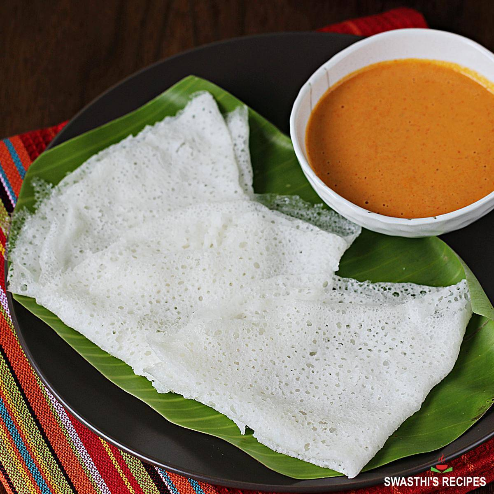

Neer Dose

Ingredients:
- Raw rice – 1 cup
- Water – 2.5 to 3 cups (adjust for consistency)
- Salt – to taste
- Oil – for greasing the pan
Instructions:
- Wash the raw rice thoroughly until the water runs clear.Soak the rice in enough water for 4–6 hours or
overnight.
- Drain the soaked rice and add it to a blender.
- Add a small amount of water and grind to a smooth paste
- Transfer the paste to a mixing bowl.
- Add more water to make the batter thin and watery, like buttermilk.
- Add salt to the batter and mix well.
- Let it rest
Video instructions